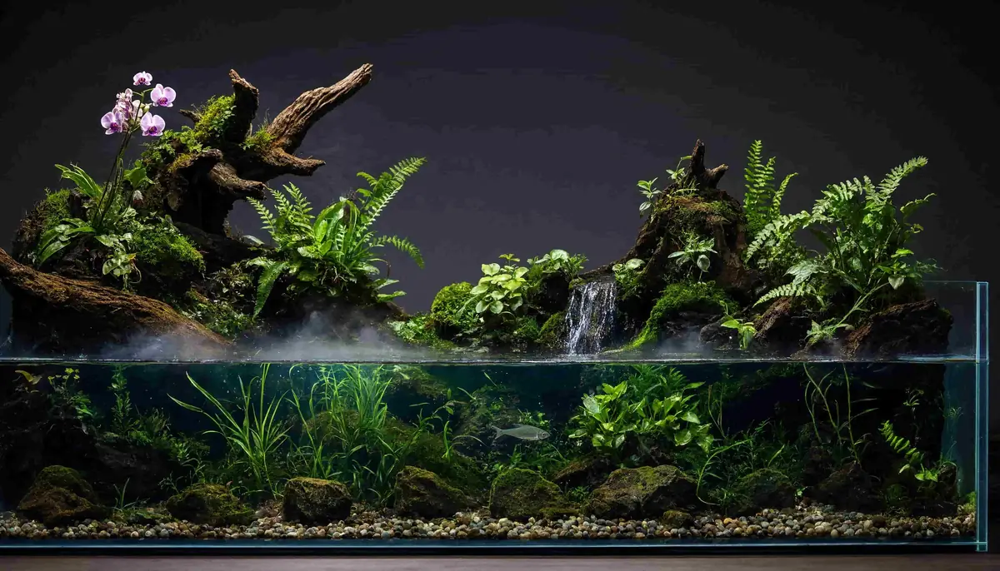
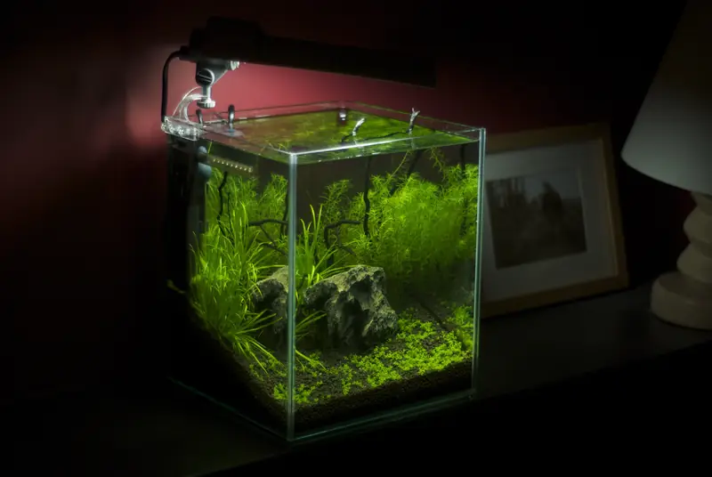
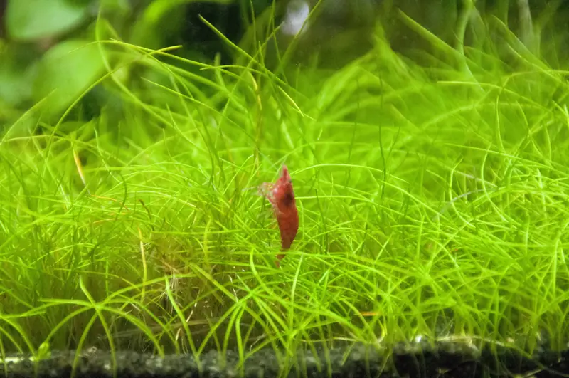
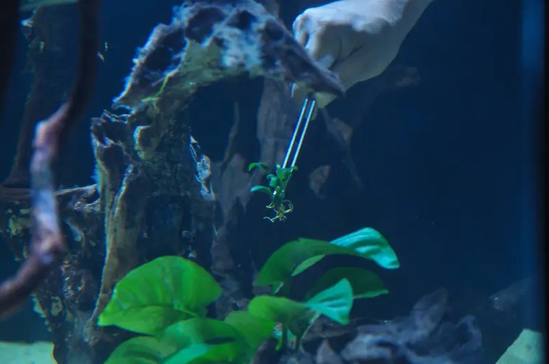
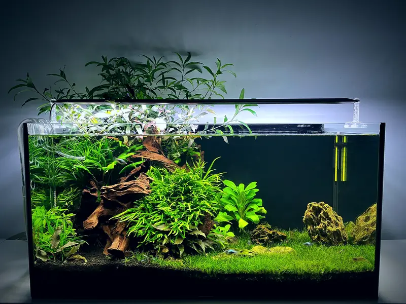
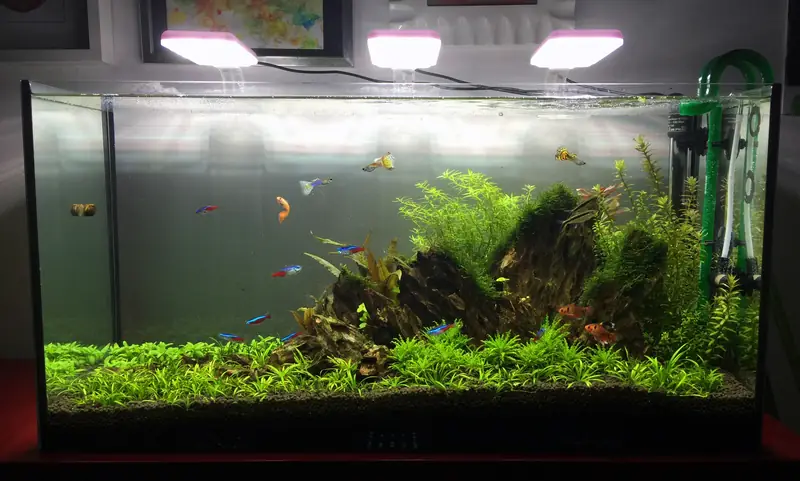
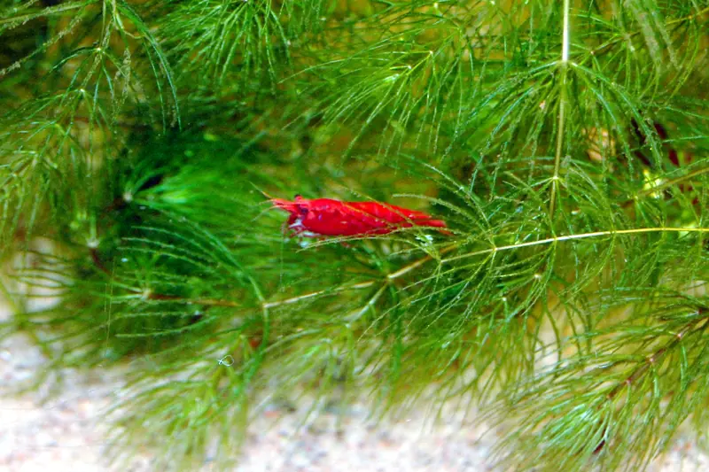
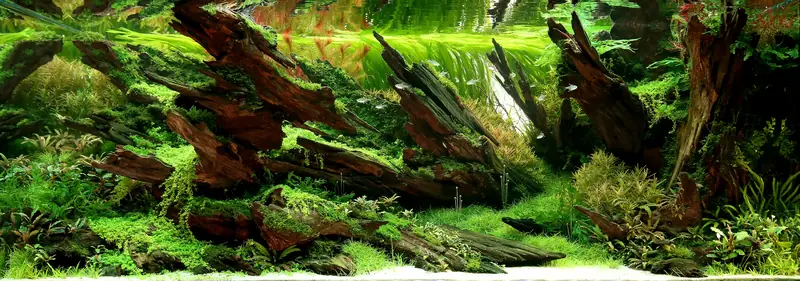
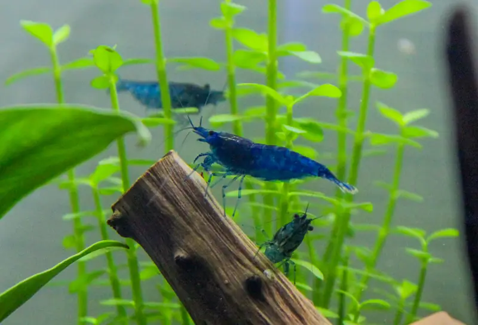
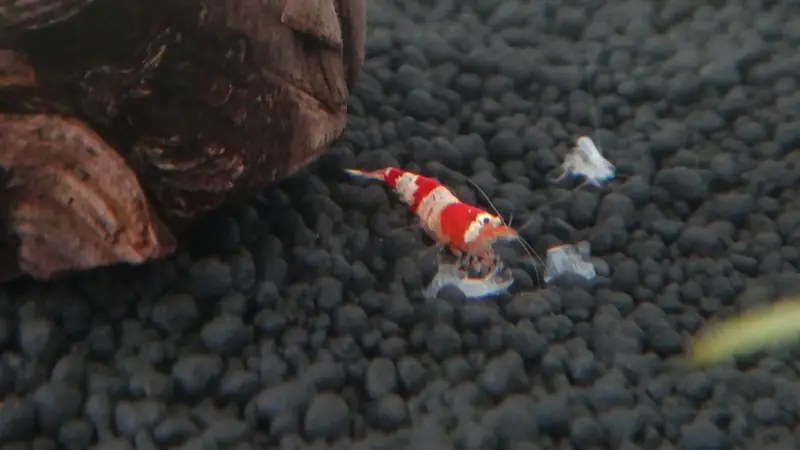

Essential Equipment for a 5-Gallon Shrimp Tank
A practical checklist of the filtration, lighting, substrate, testing and maintenance gear a small dwarf shrimp tank actually needs — and what you can skip.

Specialist Nano tanks · Shrimp keeping · Aquascaping
Discover carefully selected aquarium equipment, accessories, and practical guides for building an underwater world you'll love.
Popular starting points
Photo: Dileepkumardr, CC0 · Credits
Shop by category
Five specialist categories built around nano aquariums, dwarf shrimp and planted aquascapes.

Compact aquariums and the small but important pieces that go with them: leveling mats, lids and all-in-one kits sized for desks, shelves and countertops.

Gentle filtration, acclimation and water monitoring

Tweezers, scissors, substrate and hardscape

Filters, siphons, cleaners and test kits

LED lights, heaters, pumps and thermometers
Featured equipment
Hand-picked equipment for shrimp tanks, planted nanos and everyday maintenance — each with specs, suitable setups and honest limitations.
Start with a setup
Dwarf shrimp do best with gentle filtration, stable water and a few specific tools. Our buying guide walks through what to buy first and what you can skip.



Why AquaGearZone
Small tanks reward good equipment choices. We focus on the nano, shrimp and aquascaping corner of the hobby and present every product the same transparent way.
Recommendations tied to tank size, livestock and maintenance routine — not generic bestseller lists.
Nano, shrimp and aquascaping gear that general pet stores often overlook.
Specifications, suitable setups, pros and limitations laid out consistently for every product.
Buying guides built around actual tanks, from a 5-gallon shrimp setup to a planted nano.
Buying guides
Practical, specific advice for choosing equipment — written for beginners and useful for experienced keepers.
A practical checklist of the filtration, lighting, substrate, testing and maintenance gear a small dwarf shrimp tank actually needs — and what you can skip.
Tweezers, scissors and spatulas explained: which shapes and lengths suit your tank, what to buy first, and how to keep stainless tools in good condition.

Why filter intakes catch baby shrimp, how pre-filter sponges and mesh guards work, and the maintenance that keeps flow steady once they're fitted.
How AquaGearZone works
Browse equipment by category or setup, or search for exactly what you need.
Check specifications, suitable tank sizes, pros and limitations, and read the related guides.
“View at Retailer” takes you to an established store, where pricing, shipping and checkout are handled.
AquaGearZone doesn't sell products or take orders. When retailer partnerships are active, some links may earn us a commission at no extra cost to you — they'll always be labeled. Read our affiliate disclosure.